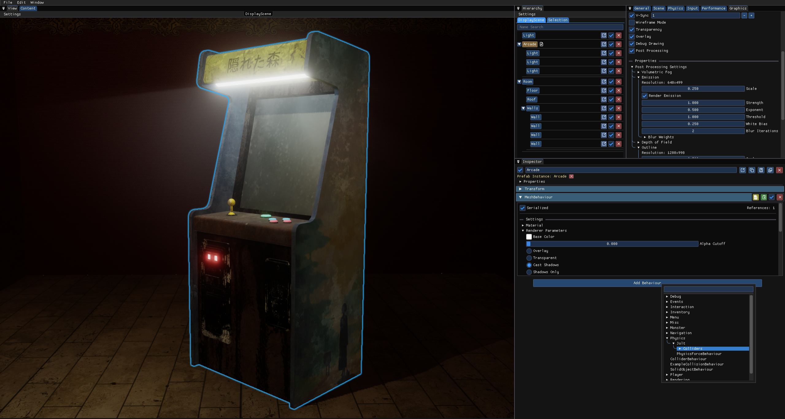
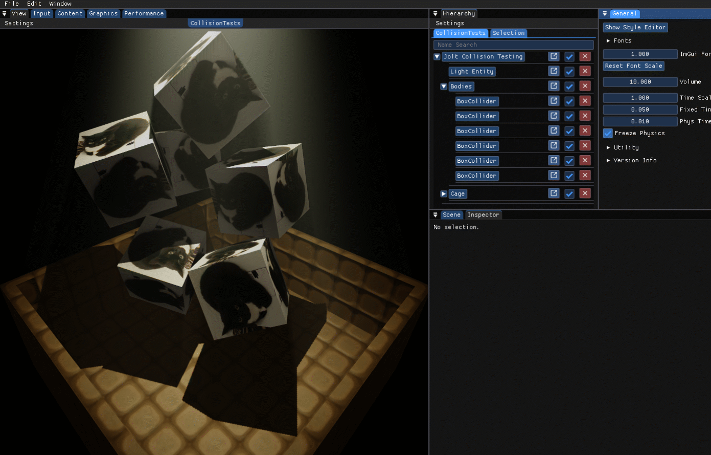
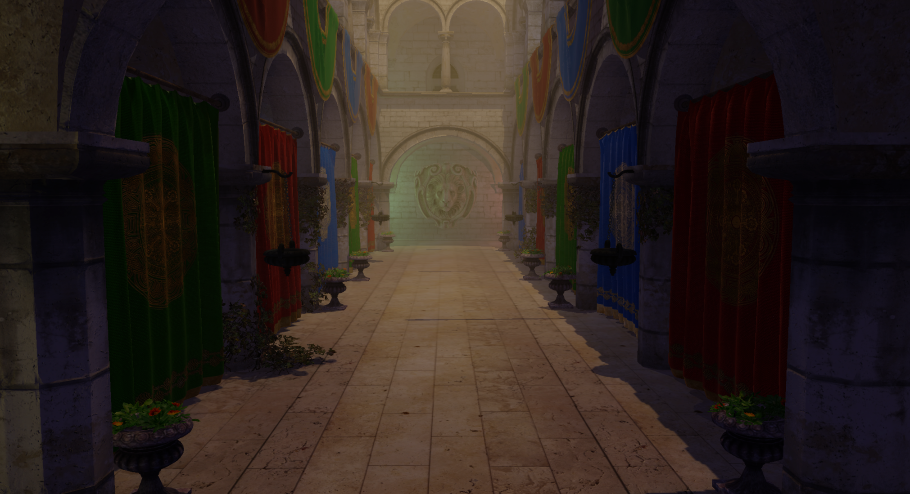

Well Engine is a Direct3D 11-based game engine developed in C++.
It was originally created as a group project by six students for the game Lurks Below.
Preview



Usage
No special prerequisites required. Windows only.
- Download the repository
- Open WellEngine.sln in Visual Studio (tested with 2022)
- Select Application as the startup project
- Use Release for normal builds
- Use Debug for breakpoints
- Use Deploy to build without editor features
Core Features
Entities, Behaviours & Systems
- Unity-style entities and components
- Scene-independent systems
Scenes
- Quad-tree frustum culling
- Serialization
- Prefab support
Developer Tools
- Transformation controls
- Entity and behaviour editing
- Debug shape rendering
- Tracy profiling support
Rendering
- Shadow mapping
- Metallic reflections
- Environment mapping
- Tiled forward rendering
- Transparency pass
- Post-processing:
- Volumetric fog
- Bloom
- Depth of field
Libraries Used
- Dear ImGui – UI
- ImPlot – plotting UI
- ImGuizmo – transformation tools
- Jolt Physics – physics engine
- SDL3 – window handling
- Tracy – profiling
- DirectXTex – texture tools
- stb – image loading